Image Boundary Extraction
Introduction
This article explores various image processing concepts, which feature in combination when implementing Image Boundary Extraction. Concepts covered within this article include: Morphological Image Erosion and Image Dilation, Image Addition and Subtraction, Boundary Sharpening, Boundary Tracing and Boundary Extraction.
Parrot: Boundary Extraction, 3×3, Red, Green, Blue
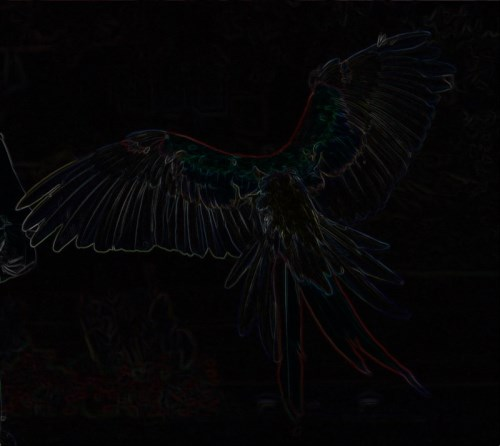
Building the Sample
There are no special requirements or instructions for building the sample source code.
Using the Sample Application
This article’s accompanying sample source code includes the definition of a sample application. The sample application serves as an implementation of the concepts discussed in this article. In using the sample application concepts can be easily tested and replicated.
The sample application has been defined as a Windows Forms application. The user interface enables the user to configure several options which influence the output produced from image filtering processes. The following section describes the options available to a user when executing the sample application:
-
Loading and Saving files – Users can specify source/input images through clicking the Load Image button. If desired, resulting filtered images can be saved to the local file system when clicking the Save Image button.
-
Filter Type – The types of filters implemented represent variations on Image Boundary Extraction. The supported filter types are: Conventional Boundary extraction, Boundary Sharpening and Boundary Tracing.
-
Filter Size – Filter intensity/strength will mostly be reliant on the filter size implemented. A Filter size represents the number of neighbouring pixels examined when applying filters.
-
Colours Applied – The sample source code and sample application provides functionality allowing a filter to only effect user specified colour components. Colour components are represented in the form of an RGB colour scheme. The inclusion or exclusion of the colour components Red, Green and Blue will be determined through user configuration.
-
Structuring Element – As mentioned, the Filter Size option determines the size of neighbourhood pixels examined. The Structuring Element’s setup determine the neighbouring pixels within the pixel neighbourhood size bounds that should be used as input when calculating filter results.
The following image is a screenshot of the Image Boundary Extraction sample application in action:
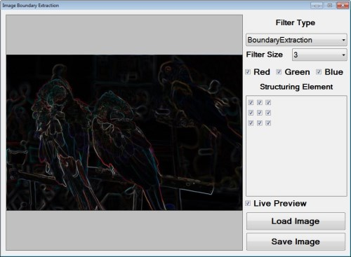
Parrot: Boundary Extraction, 3×3, Green
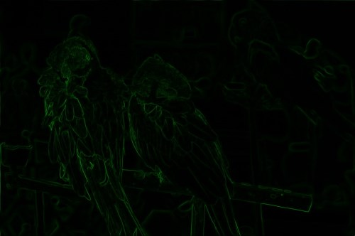
Morphological Boundary Extraction
Image Boundary Extraction can be considered a method of Image Edge Detection. In contrast to more commonly implemented gradient based edge detection methods, Image Boundary Extraction originates from Morphological Image Filters.
When drawing a comparison, Image Boundary Extraction and Morphological Edge Detection express strong similarities. Morphological Edge Detection results from the difference in image erosion and image dilation. Considered from a different point of view, creating one image expressing thicker edges and another image expressing thinner edges provides the means to calculate the difference in edges.
Image Boundary Extraction implements the same concept as Morphological Edge Detection. The base concept can be regarded as calculating the difference between two images which rendered the same image, but expressing a difference in image edges. Image Boundary Extraction relies on calculating the difference between either image erosion and the source image or image dilation and the source image. The difference between image erosion and image dilation in most cases result in more of difference than the difference between image erosion and the source image or image dilation and the source image. The result of Image Boundary Extraction representing less of a difference than Morphological Edge Detection can be observed in Image Boundary Extraction being expressed in finer/smaller width lines.
Difference of Gaussians is another method of edge detection which functions along the same basis. Edges are determined by calculating the difference between two images, each having been filtered from the same source image, using a Gaussian blur of differing intensity levels.
Parrot: Boundary Extraction, 3×3, Red, Green, Blue
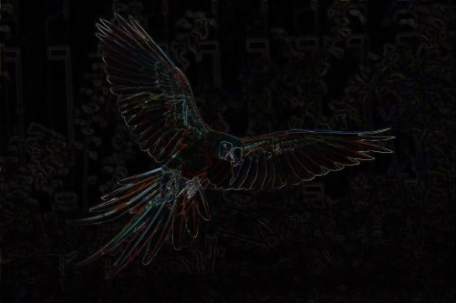
Boundary Sharpening
The concept of Boundary Sharpening refers to enhancing or sharpening the boundaries or edges expressed in a source/input image. Boundaries can be easily determined or extracted as discussed earlier when exploring Boundary Extraction.
The steps involved in performing Boundary Sharpening can be described as follows:
-
Extract Boundaries – Determine boundaries by performing image dilation and calculating the difference between the dilated image and the source image.
-
Match Source Edges and Extracted Boundaries – The boundaries extracted in the previous step represent the difference between image dilation and the original source image. Ensure that extracted boundaries match the source image through performing image dilation on a copy of the source/input image.
-
Emphasise Extracted boundaries in source image – Perform image addition using the extracted boundaries image and dilated copy of the source image.
Parrot: Boundary Extraction, 3×3, Red, Green, Blue
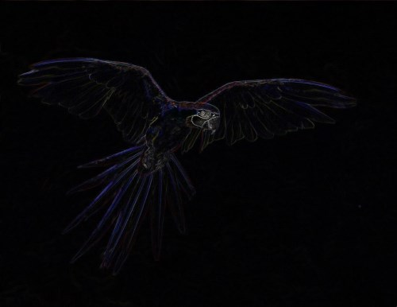
Boundary Tracing
Boundary Tracing refers to applying image filters which result in image edges/boundaries appearing darker or more pronounced. This type of filter also relies on Boundary Extraction.
Boundary Tracing can be implemented in two steps, described as follows:
-
Extract Boundaries – Determine boundaries by performing image dilation and calculating the difference between the dilated image and the source image.
-
Emphasise Extracted boundaries in source image – Subtract the extracted boundaries from the original source image.
Parrot: Boundary Extraction, 3×3, Red, Green, Blue
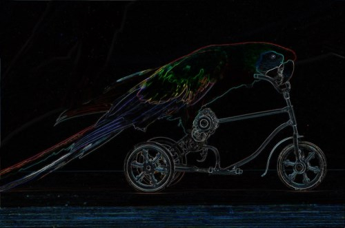
Implementing Morphological Erosion and Dilation
The accompanying sample source code defines the MorphologyOperation method, defined as an extension method targeting the Bitmap class. In terms of parameters this method expects a two dimensional array representing a structuring element. The other required parameter represents an enumeration value indicating which Morphological Operation to perform, either erosion or dilation.
The following code snippet provides the definition in full:
private static Bitmap MorphologyOperation(this Bitmap sourceBitmap,
bool[,] se,
MorphologyOperationType morphType,
bool applyBlue = true,
bool applyGreen = true,
bool applyRed = true)
{
BitmapData sourceData =
sourceBitmap.LockBits(new Rectangle(0, 0,
sourceBitmap.Width, sourceBitmap.Height),
ImageLockMode.ReadOnly,
PixelFormat.Format32bppArgb);
byte[] pixelBuffer = new byte[sourceData.Stride *
sourceData.Height];
byte[] resultBuffer = new byte[sourceData.Stride *
sourceData.Height];
Marshal.Copy(sourceData.Scan0, pixelBuffer, 0,
pixelBuffer.Length);
sourceBitmap.UnlockBits(sourceData);
int filterOffset = (se.GetLength(0) - 1) / 2;
int calcOffset = 0, byteOffset = 0;
byte blueErode = 0, greenErode = 0, redErode = 0;
byte blueDilate = 0, greenDilate = 0, redDilate = 0;
for (int offsetY = 0; offsetY <
sourceBitmap.Height - filterOffset; offsetY++)
{
for (int offsetX = 0; offsetX <
sourceBitmap.Width - filterOffset; offsetX++)
{
byteOffset = offsetY * sourceData.Stride +
offsetX * 4;
blueErode = 255; greenErode = 255; redErode = 255;
blueDilate = 0; greenDilate = 0; redDilate = 0;
for (int filterY = -filterOffset;
filterY <= filterOffset; filterY++)
{
for (int filterX = -filterOffset;
filterX <= filterOffset; filterX++)
{
if (se[filterY + filterOffset,
filterX + filterOffset] == true)
{
calcOffset = byteOffset +
(filterX * 4) +
(filterY * sourceData.Stride);
calcOffset = (calcOffset < 0 ? 0 :
(calcOffset >= pixelBuffer.Length + 2 ?
pixelBuffer.Length - 3 : calcOffset));
blueDilate =
(pixelBuffer[calcOffset] > blueDilate ?
pixelBuffer[calcOffset] : blueDilate);
greenDilate =
(pixelBuffer[calcOffset + 1] > greenDilate ?
pixelBuffer[calcOffset + 1] : greenDilate);
redDilate =
(pixelBuffer[calcOffset + 2] > redDilate ?
pixelBuffer[calcOffset + 2] : redDilate);
blueErode =
(pixelBuffer[calcOffset] < blueErode ?
pixelBuffer[calcOffset] : blueErode);
greenErode =
(pixelBuffer[calcOffset + 1] < greenErode ?
pixelBuffer[calcOffset + 1] : greenErode);
redErode =
(pixelBuffer[calcOffset + 2] < redErode ?
pixelBuffer[calcOffset + 2] : redErode);
}
}
}
blueErode = (applyBlue ? blueErode : pixelBuffer[byteOffset]);
blueDilate = (applyBlue ? blueDilate : pixelBuffer[byteOffset]);
greenErode = (applyGreen ? greenErode : pixelBuffer[byteOffset + 1]);
greenDilate = (applyGreen ? greenDilate : pixelBuffer[byteOffset + 1]);
redErode = (applyRed ? redErode : pixelBuffer[byteOffset + 2]);
redDilate = (applyRed ? redDilate : pixelBuffer[byteOffset + 2]);
if (morphType == MorphologyOperationType.Erosion)
{
resultBuffer[byteOffset] = blueErode;
resultBuffer[byteOffset + 1] = greenErode;
resultBuffer[byteOffset + 2] = redErode;
}
else if (morphType == MorphologyOperationType.Dilation)
{
resultBuffer[byteOffset] = blueDilate;
resultBuffer[byteOffset + 1] = greenDilate;
resultBuffer[byteOffset + 2] = redDilate;
}
resultBuffer[byteOffset + 3] = 255;
}
}
Bitmap resultBitmap = new Bitmap(sourceBitmap.Width, sourceBitmap.Height);
BitmapData resultData = resultBitmap.LockBits(new Rectangle(0, 0,
resultBitmap.Width, resultBitmap.Height),
ImageLockMode.WriteOnly,
PixelFormat.Format32bppArgb);
Marshal.Copy(resultBuffer, 0, resultData.Scan0,
resultBuffer.Length);
resultBitmap.UnlockBits(resultData);
return resultBitmap;
}
private static Bitmap MorphologyOperation(this Bitmap sourceBitmap, bool[,] se, MorphologyOperationType morphType, bool applyBlue = true, bool applyGreen = true, bool applyRed = true) { BitmapData sourceData = sourceBitmap.LockBits(new Rectangle(0, 0, sourceBitmap.Width, sourceBitmap.Height), ImageLockMode.ReadOnly, PixelFormat.Format32bppArgb); byte[] pixelBuffer = new byte[sourceData.Stride * sourceData.Height]; byte[] resultBuffer = new byte[sourceData.Stride * sourceData.Height]; Marshal.Copy(sourceData.Scan0, pixelBuffer, 0, pixelBuffer.Length); sourceBitmap.UnlockBits(sourceData); int filterOffset = (se.GetLength(0) - 1) / 2; int calcOffset = 0, byteOffset = 0; byte blueErode = 0, greenErode = 0, redErode = 0; byte blueDilate = 0, greenDilate = 0, redDilate = 0; for (int offsetY = 0; offsetY < sourceBitmap.Height - filterOffset; offsetY++) { for (int offsetX = 0; offsetX < sourceBitmap.Width - filterOffset; offsetX++) { byteOffset = offsetY * sourceData.Stride + offsetX * 4; blueErode = 255; greenErode = 255; redErode = 255; blueDilate = 0; greenDilate = 0; redDilate = 0; for (int filterY = -filterOffset; filterY <= filterOffset; filterY++) { for (int filterX = -filterOffset; filterX <= filterOffset; filterX++) { if (se[filterY + filterOffset, filterX + filterOffset] == true) { calcOffset = byteOffset + (filterX * 4) + (filterY * sourceData.Stride); calcOffset = (calcOffset < 0 ? 0 : (calcOffset >= pixelBuffer.Length + 2 ? pixelBuffer.Length - 3 : calcOffset)); blueDilate = (pixelBuffer[calcOffset] > blueDilate ? pixelBuffer[calcOffset] : blueDilate); greenDilate = (pixelBuffer[calcOffset + 1] > greenDilate ? pixelBuffer[calcOffset + 1] : greenDilate); redDilate = (pixelBuffer[calcOffset + 2] > redDilate ? pixelBuffer[calcOffset + 2] : redDilate); blueErode = (pixelBuffer[calcOffset] < blueErode ? pixelBuffer[calcOffset] : blueErode); greenErode = (pixelBuffer[calcOffset + 1] < greenErode ? pixelBuffer[calcOffset + 1] : greenErode); redErode = (pixelBuffer[calcOffset + 2] < redErode ? pixelBuffer[calcOffset + 2] : redErode); } } } blueErode = (applyBlue ? blueErode : pixelBuffer[byteOffset]); blueDilate = (applyBlue ? blueDilate : pixelBuffer[byteOffset]); greenErode = (applyGreen ? greenErode : pixelBuffer[byteOffset + 1]); greenDilate = (applyGreen ? greenDilate : pixelBuffer[byteOffset + 1]); redErode = (applyRed ? redErode : pixelBuffer[byteOffset + 2]); redDilate = (applyRed ? redDilate : pixelBuffer[byteOffset + 2]); if (morphType == MorphologyOperationType.Erosion) { resultBuffer[byteOffset] = blueErode; resultBuffer[byteOffset + 1] = greenErode; resultBuffer[byteOffset + 2] = redErode; } else if (morphType == MorphologyOperationType.Dilation) { resultBuffer[byteOffset] = blueDilate; resultBuffer[byteOffset + 1] = greenDilate; resultBuffer[byteOffset + 2] = redDilate; } resultBuffer[byteOffset + 3] = 255; } } Bitmap resultBitmap = new Bitmap(sourceBitmap.Width, sourceBitmap.Height); BitmapData resultData = resultBitmap.LockBits(new Rectangle(0, 0, resultBitmap.Width, resultBitmap.Height), ImageLockMode.WriteOnly, PixelFormat.Format32bppArgb); Marshal.Copy(resultBuffer, 0, resultData.Scan0, resultBuffer.Length); resultBitmap.UnlockBits(resultData); return resultBitmap; }
Parrot: Boundary Extraction, 3×3, Red, Green
Implementing Image Addition
The sample source code encapsulates the process of combining two separate images through means of addition. The AddImage method serves as a single declaration of image addition functionality. This method has been defined as an extension method targeting the Bitmap class. Boundary Sharpen filtering implements image addition.
The following code snippet provides the definition of the AddImage extension method:
private static Bitmap AddImage(this Bitmapsource Bitmap,
Bitmap addBitmap)
{
BitmapData sourceData =
sourceBitmap.LockBits(new Rectangle (0, 0,
sourceBitmap.Width, sourceBitmap.Height),
ImageLockMode.ReadOnly,
PixelFormat.Format32bppArgb);
byte[] resultBuffer = new byte[sourceData.Stride *
sourceData.Height];
Marshal.Copy(sourceData.Scan0, resultBuffer, 0,
resultBuffer.Length);
sourceBitmap.UnlockBits(sourceData);
BitmapData addData =
addBitmap.LockBits(new Rectangle(0, 0,
addBitmap.Width, addBitmap.Height),
ImageLockMode.ReadOnly,
PixelFormat.Format32bppArgb);
byte[] addBuffer = new byte[addData.Stride *
addData.Height];
Marshal.Copy(addData.Scan0, addBuffer, 0,
addBuffer.Length);
addBitmap.UnlockBits(addData);
for (int k = 0; k + 4 < resultBuffer.Length &&
k + 4 < addBuffer.Length; k += 4)
{
resultBuffer[k] =
AddColors(resultBuffer[k], addBuffer[k]);
resultBuffer[k + 1] =
AddColors(resultBuffer[k + 1], addBuffer[k + 1]);
resultBuffer[k + 2] =
AddColors(resultBuffer[k + 2], addBuffer[k + 2]);
resultBuffer[k + 3] = 255;
}
Bitmap resultBitmap = new Bitmap(sourceBitmap.Width,
sourceBitmap.Height);
BitmapData resultData =
resultBitmap.LockBits(new Rectangle(0, 0,
resultBitmap.Width, resultBitmap.Height),
ImageLockMode.WriteOnly,
PixelFormat.Format32bppArgb);
Marshal.Copy(resultBuffer, 0, resultData.Scan0,
resultBuffer.Length);
resultBitmap.UnlockBits(resultData);
return resultBitmap;
}
private static byte AddColors(byte color1, byte color2)
{
int result = color1 + color2;
return (byte)(result < 0 ? 0 : (result > 255 ? 255 : result));
}
private static Bitmap AddImage(this Bitmapsource Bitmap, Bitmap addBitmap) { BitmapData sourceData = sourceBitmap.LockBits(new Rectangle (0, 0, sourceBitmap.Width, sourceBitmap.Height), ImageLockMode.ReadOnly, PixelFormat.Format32bppArgb); byte[] resultBuffer = new byte[sourceData.Stride * sourceData.Height]; Marshal.Copy(sourceData.Scan0, resultBuffer, 0, resultBuffer.Length); sourceBitmap.UnlockBits(sourceData); BitmapData addData = addBitmap.LockBits(new Rectangle(0, 0, addBitmap.Width, addBitmap.Height), ImageLockMode.ReadOnly, PixelFormat.Format32bppArgb); byte[] addBuffer = new byte[addData.Stride * addData.Height]; Marshal.Copy(addData.Scan0, addBuffer, 0, addBuffer.Length); addBitmap.UnlockBits(addData); for (int k = 0; k + 4 < resultBuffer.Length && k + 4 < addBuffer.Length; k += 4) { resultBuffer[k] = AddColors(resultBuffer[k], addBuffer[k]); resultBuffer[k + 1] = AddColors(resultBuffer[k + 1], addBuffer[k + 1]); resultBuffer[k + 2] = AddColors(resultBuffer[k + 2], addBuffer[k + 2]); resultBuffer[k + 3] = 255; } Bitmap resultBitmap = new Bitmap(sourceBitmap.Width, sourceBitmap.Height); BitmapData resultData = resultBitmap.LockBits(new Rectangle(0, 0, resultBitmap.Width, resultBitmap.Height), ImageLockMode.WriteOnly, PixelFormat.Format32bppArgb); Marshal.Copy(resultBuffer, 0, resultData.Scan0, resultBuffer.Length); resultBitmap.UnlockBits(resultData); return resultBitmap; } private static byte AddColors(byte color1, byte color2) { int result = color1 + color2; return (byte)(result < 0 ? 0 : (result > 255 ? 255 : result)); }
Parrot: Boundary Extraction, 3×3, Red, Green, Blue
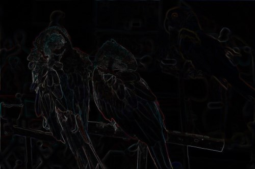
Implementing Image Subtraction
In a similar fashion regarding the AddImage method the sample code defines the SubractImage method. By definition this method serves as an extension method targeting the Bitmap class. Image subtraction has been implemented in Boundary Extraction and Boundary Tracing.
The definition of the SubtractImage method listed as follows:
private static Bitmap SubtractImage(this Bitmap sourceBitmap,
Bitmap subtractBitmap)
{
BitmapData sourceData =
sourceBitmap.LockBits(new Rectangle(0, 0,
sourceBitmap.Width, sourceBitmap.Height),
ImageLockMode.ReadOnly,
PixelFormat.Format32bppArgb);
byte[] resultBuffer = new byte[sourceData.Stride *
sourceData.Height];
Marshal.Copy(sourceData.Scan0, resultBuffer, 0,
resultBuffer.Length);
sourceBitmap.UnlockBits(sourceData);
BitmapData subtractData =
subtractBitmap.LockBits(new Rectangle(0, 0,
subtractBitmap.Width, subtractBitmap.Height),
ImageLockMode.ReadOnly,
PixelFormat.Format32bppArgb);
byte[] subtractBuffer = new byte[subtractData.Stride *
subtractData.Height];
Marshal.Copy(subtractData.Scan0, subtractBuffer, 0,
subtractBuffer.Length);
subtractBitmap.UnlockBits(subtractData);
for (int k = 0; k + 4 < resultBuffer.Length &&
k + 4 < subtractBuffer.Length; k += 4)
{
resultBuffer[k] =
SubtractColors(resultBuffer[k], subtractBuffer[k]);
resultBuffer[k + 1] =
SubtractColors(resultBuffer[k + 1], subtractBuffer[k + 1]);
resultBuffer[k + 2] =
SubtractColors(resultBuffer[k + 2], subtractBuffer[k + 2]);
resultBuffer[k + 3] = 255;
}
Bitmap resultBitmap = new Bitmap (sourceBitmap.Width,
sourceBitmap.Height);
BitmapData resultData =
resultBitmap.LockBits(new Rectangle (0, 0,
resultBitmap.Width, resultBitmap.Height),
ImageLockMode.WriteOnly,
PixelFormat.Format32bppArgb);
Marshal.Copy(resultBuffer, 0, resultData.Scan0,
resultBuffer.Length);
resultBitmap.UnlockBits(resultData);
return resultBitmap;
}
private static byte SubtractColors(byte color1, byte color2)
{
int result = (int)color1 - (int)color2;
return (byte)(result < 0 ? 0 : result);
}
private static Bitmap SubtractImage(this Bitmap sourceBitmap, Bitmap subtractBitmap) { BitmapData sourceData = sourceBitmap.LockBits(new Rectangle(0, 0, sourceBitmap.Width, sourceBitmap.Height), ImageLockMode.ReadOnly, PixelFormat.Format32bppArgb); byte[] resultBuffer = new byte[sourceData.Stride * sourceData.Height]; Marshal.Copy(sourceData.Scan0, resultBuffer, 0, resultBuffer.Length); sourceBitmap.UnlockBits(sourceData); BitmapData subtractData = subtractBitmap.LockBits(new Rectangle(0, 0, subtractBitmap.Width, subtractBitmap.Height), ImageLockMode.ReadOnly, PixelFormat.Format32bppArgb); byte[] subtractBuffer = new byte[subtractData.Stride * subtractData.Height]; Marshal.Copy(subtractData.Scan0, subtractBuffer, 0, subtractBuffer.Length); subtractBitmap.UnlockBits(subtractData); for (int k = 0; k + 4 < resultBuffer.Length && k + 4 < subtractBuffer.Length; k += 4) { resultBuffer[k] = SubtractColors(resultBuffer[k], subtractBuffer[k]); resultBuffer[k + 1] = SubtractColors(resultBuffer[k + 1], subtractBuffer[k + 1]); resultBuffer[k + 2] = SubtractColors(resultBuffer[k + 2], subtractBuffer[k + 2]); resultBuffer[k + 3] = 255; } Bitmap resultBitmap = new Bitmap (sourceBitmap.Width, sourceBitmap.Height); BitmapData resultData = resultBitmap.LockBits(new Rectangle (0, 0, resultBitmap.Width, resultBitmap.Height), ImageLockMode.WriteOnly, PixelFormat.Format32bppArgb); Marshal.Copy(resultBuffer, 0, resultData.Scan0, resultBuffer.Length); resultBitmap.UnlockBits(resultData); return resultBitmap; } private static byte SubtractColors(byte color1, byte color2) { int result = (int)color1 - (int)color2; return (byte)(result < 0 ? 0 : result); }
Parrot: Boundary Extraction, 3×3, Green
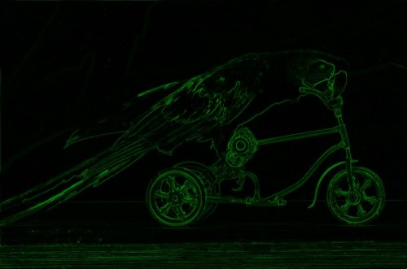
Implementing Image Boundary Extraction
In the sample source code processing Image Boundary Extraction can be achieved when invoking the BoundaryExtraction method. Defined as an extension method, the BoundaryExtraction method targets the Bitmap class.
As discussed earlier, this method performs Boundary Extraction through subtracting the source image from a dilated copy of the source image.
The following code snippet details the definition of the BoundaryExtraction method:
private static Bitmap
BoundaryExtraction(this Bitmap sourceBitmap,
bool[,] se, bool applyBlue = true,
bool applyGreen = true, bool applyRed = true)
{
Bitmap resultBitmap =
sourceBitmap.MorphologyOperation(se,
MorphologyOperationType.Dilation, applyBlue,
applyGreen, applyRed);
resultBitmap = resultBitmap.SubtractImage(sourceBitmap);
return resultBitmap;
}
private static Bitmap BoundaryExtraction(this Bitmap sourceBitmap, bool[,] se, bool applyBlue = true, bool applyGreen = true, bool applyRed = true) { Bitmap resultBitmap = sourceBitmap.MorphologyOperation(se, MorphologyOperationType.Dilation, applyBlue, applyGreen, applyRed); resultBitmap = resultBitmap.SubtractImage(sourceBitmap); return resultBitmap; }
Parrot: Boundary Extraction, 3×3, Red, Blue
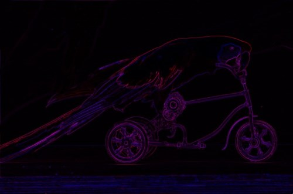
Implementing Image Boundary Sharpening
Boundary Sharpening in the sample source code has been implemented through the definition of the BoundarySharpen method. The BoundarySharpen extension method targets the Bitmap class. The following code snippet provides the definition:
private static Bitmap
BoundarySharpen(this Bitmap sourceBitmap,
bool[,] se, bool applyBlue = true,
bool applyGreen = true, bool applyRed = true)
{
Bitmap resultBitmap =
sourceBitmap.BoundaryExtraction(se, applyBlue,
applyGreen, applyRed);
resultBitmap = sourceBitmap.MorphologyOperation(se,
MorphologyOperationType.Dilation, applyBlue,
applyGreen, applyRed).AddImage(resultBitmap);
return resultBitmap;
}
private static Bitmap BoundarySharpen(this Bitmap sourceBitmap, bool[,] se, bool applyBlue = true, bool applyGreen = true, bool applyRed = true) { Bitmap resultBitmap = sourceBitmap.BoundaryExtraction(se, applyBlue, applyGreen, applyRed); resultBitmap = sourceBitmap.MorphologyOperation(se, MorphologyOperationType.Dilation, applyBlue, applyGreen, applyRed).AddImage(resultBitmap); return resultBitmap; }
Parrot: Boundary Extraction, 3×3, Green
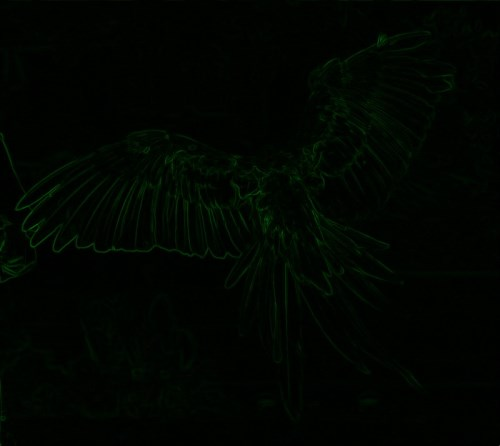
Implementing Image Boundary Tracing
Boundary Tracing has been defined through the BoundaryTrace extension method, which targets the Bitmap class. Similar to the BoundarySharpen method this method performs Boundary Extraction, the result of which serves to be subtracted from the original source image. Subtracting image boundaries/edges result in those boundaries/edges being darkened, or traced. The definition of the BoundaryTracing extension method detailed as follows:
private static Bitmap
BoundaryTrace(this Bitmap sourceBitmap,
bool[,] se, bool applyBlue = true,
bool applyGreen = true, bool applyRed = true)
{
Bitmap resultBitmap =
sourceBitmap.BoundaryExtraction(se, applyBlue,
applyGreen, applyRed);
resultBitmap = sourceBitmap.SubtractImage(resultBitmap);
return resultBitmap;
}
private static Bitmap BoundaryTrace(this Bitmap sourceBitmap, bool[,] se, bool applyBlue = true, bool applyGreen = true, bool applyRed = true) { Bitmap resultBitmap = sourceBitmap.BoundaryExtraction(se, applyBlue, applyGreen, applyRed); resultBitmap = sourceBitmap.SubtractImage(resultBitmap); return resultBitmap; }
Parrot: Boundary Extraction, 3×3, Green, Blue
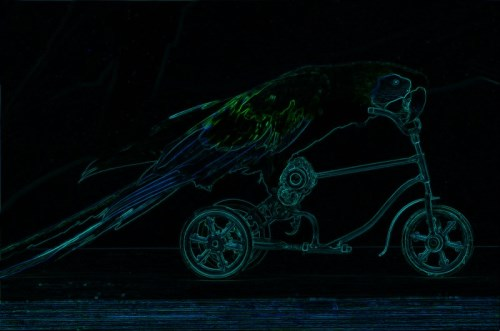
Implementing a Wrapper Method
The BoundaryExtractionFilter method is the only method defined as publicly accessible. Following convention, this method’s definition signals the method as an extension method targeting the Bitmap class. This method has the intention of acting as a wrapper method, a single method capable of performing Boundary Extraction, Boundary Sharpening and Boundary Tracing, depending on method parameters.
The definition of the BoundaryExtractionFilter method detailed by the following code snippet:
public static Bitmap
BoundaryExtractionFilter(this Bitmap sourceBitmap,
bool[,] se, BoundaryExtractionFilterType
filterType, bool applyBlue = true,
bool applyGreen = true, bool applyRed = true)
{
Bitmap resultBitmap = null;
if (filterType == BoundaryExtractionFilterType.BoundaryExtraction)
{
resultBitmap =
sourceBitmap.BoundaryExtraction(se, applyBlue,
applyGreen, applyRed);
}
else if (filterType == BoundaryExtractionFilterType.BoundarySharpen)
{
resultBitmap =
sourceBitmap.BoundarySharpen(se, applyBlue,
applyGreen, applyRed);
}
else if (filterType == BoundaryExtractionFilterType.BoundaryTrace)
{
resultBitmap =
sourceBitmap.BoundaryTrace(se, applyBlue,
applyGreen, applyRed);
}
return resultBitmap;
}
public static Bitmap BoundaryExtractionFilter(this Bitmap sourceBitmap, bool[,] se, BoundaryExtractionFilterType filterType, bool applyBlue = true, bool applyGreen = true, bool applyRed = true) { Bitmap resultBitmap = null; if (filterType == BoundaryExtractionFilterType.BoundaryExtraction) { resultBitmap = sourceBitmap.BoundaryExtraction(se, applyBlue, applyGreen, applyRed); } else if (filterType == BoundaryExtractionFilterType.BoundarySharpen) { resultBitmap = sourceBitmap.BoundarySharpen(se, applyBlue, applyGreen, applyRed); } else if (filterType == BoundaryExtractionFilterType.BoundaryTrace) { resultBitmap = sourceBitmap.BoundaryTrace(se, applyBlue, applyGreen, applyRed); } return resultBitmap; }
Parrot: Boundary Extraction, 3×3, Red, Green, Blue
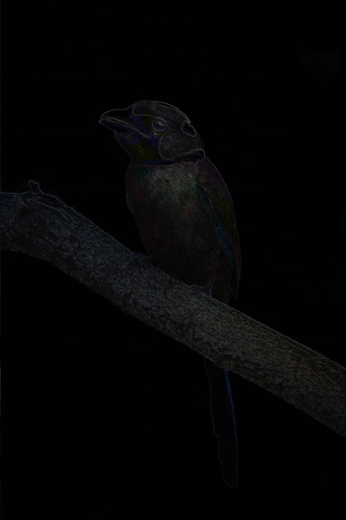
Sample Images
This article features a number of sample images. All featured images have been licensed allowing for reproduction. The following images feature as sample images:
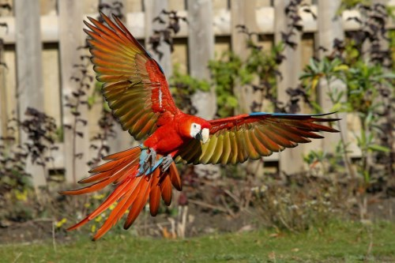
{kind=link}
{kind=link}
{kind=link}
{kind=link}

{kind=link}
{kind=link}
Source Code Files
- ExtBitmap.cs - Contains the following method definitions: BoundaryExtractionFilter, BoundaryExtraction, BoundarySharpen, BoundaryTrace, MorphologyOperation, SubtractImage, AddImage.
- MainForm.cs - Windows Forms test application.
More Information
This article is based on an article originally posted on my blog: http://softwarebydefault.com/2013/07/21/image-boundary-extraction/ If you have any questions/comments please feel free to make use of the Q&A section on this page, also please remember to rate this article.